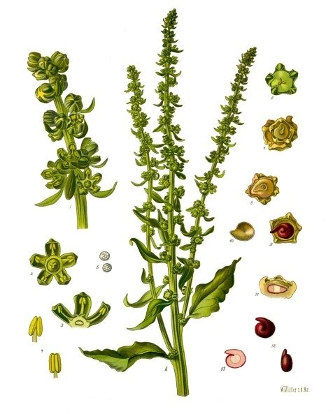

चुकंदरBeetroot and Palak Beet
Beta vulgaris · Amaranthaceae · FLR-0268

- Scientific name वैज्ञानिक नाम
- Beta vulgaris L.
- Family कुल
- Amaranthaceae
- Hindi हिंदी
- चुकंदर
- Local names स्थानीय नाम
- chukandar, chukander, beetroot, palak beet
- Status here यहाँ की स्थिति
- cultivated
- Movement आवागमन
- Resident, here all year
- Known from कहाँ दर्ज
- Others have published records from the Basti–Ayodhya districts बस्ती–अयोध्या के ज़िलों से दूसरों के प्रकाशित अभिलेख
- IUCN IUCN
- not evaluated
- Review समीक्षा
- audited and independently read
When to look कब देखें
Expected mainly in October, November, December, January, February, March. मुख्यतः अक्टूबर, नवंबर, दिसंबर, जनवरी, फ़रवरी, मार्च में अपेक्षित।
Uses and possibilities उपयोग और संभावनाएँ
“Traditional medicine” means a documented traditional use, not a claim that it works. Nothing on this page is medical advice.
Drawn from the documented uses in the profile below, where each is labelled traditional, current or a research lead. All uses →
Tell it apart from इनसे अलग पहचानें
चुकंदर / Beetroot and Palak Beet
Beta vulgaris L. — Amaranthaceae
चुकंदर — सर्दी की सब्जी, जिसकी जड़ें गहरे लाल-बैंगनी, मीठी, और पौष्टिक होती हैं। सबसे ऊपर की पत्तियाँ (जिन्हें "पालक बीट" कहते हैं) भी सब्जी के रूप में खाई जाती हैं। जड़ें उबालकर, तलकर या सलाद में खाई जाती हैं। स्वाद मीठा। खून की कमी के लिए अच्छा माना जाता है। सर्दी में खेतों में आसानी से बढ़ता है।
Quick Identification त्वरित पहचान
| Feature | Description |
|---|---|
| Root | Globular to oblate, 5–10 cm diameter, skin deep purple-red, flesh dark red with concentric rings |
| Leaves | Alternate, simple, petiolate, oblong or broad-triangular, 10–25 cm, dark green with red veins and midrib |
| Leafstalk | Thick, red or burgundy, edible when young |
| Plant height | 20–40 cm at maturity |
| Smell | Earthy, mild odour when fresh |
Field tip: A cool-season vegetable with dark purple-red roots, thick red-veined leaves, and burgundy petioles. Visible in vegetable plots from October to March. The roots are spherical to slightly flattened; the leaves are crinkled and thick. Pull a root to confirm; the flesh is dark red inside.
Morphology आकारिकी
Biometrics (typical measurements for Beta vulgaris in northern India):
| Measurement | Range |
|---|---|
| Root diameter | 5–10 cm |
| Root weight | 100–400 g |
| Leaf length | 10–25 cm |
| Petiole length | 5–12 cm |
| Plant height | 20–40 cm |
Root: Globular to oblate, smooth-skinned, deep purple-red or burgundy. The epidermis is thin; the flesh is dark red inside, often with concentric rings of lighter and darker red. The root crown emerges slightly above soil.
Leaves: Alternate, simple, with long petioles; blade oblong to broad-triangular. Colour dark green with red or burgundy veins and midrib. The leaf is somewhat crinkled or undulating. Young leaves are more tender and suitable for cooking as a leafy vegetable ("palak beet").
Flowers: (rarely produced in the vegetable crop) Small, greenish, in terminal spikes or inflorescences; the plant is typically harvested before flowering.
Root system: Taproot extending 15–20 cm into soil; shallow lateral roots.
हिंदी: जड़ें गहरे लाल-बैंगनी, मीठी। पत्तियाँ गहरी हरी, लाल नस वाली, खाने योग्य।
Behaviour & Ecology व्यवहार और पारिस्थितिकी
Beetroot is a cool-season crop native to coastal Mediterranean regions and domesticated for its edible root and leaves. The plant is well-suited to the rabi (winter) season in northern India, where it grows from October through March. The crop prefers well-drained, fertile soil rich in organic matter and responds well to moderate irrigation. Beetroot is relatively hardy and less susceptible to major pests compared to many vegetables, though leaf beetles and root rot can occur.
The plant is a biennial but is grown as an annual for root production, being harvested before flowering.
हिंदी: सर्दी की फसल। अच्छी जमीन चाहिए। कीटों के लिए कम संवेदनशील। बहुत पानी न दें।
Life Cycle / Phenology जीवन चक्र
| Month / Season | Event |
|---|---|
| August–September | Seed preparation and seedbed preparation |
| September–October | Sowing; germination and seedling establishment |
| October–November | Leaf development; root enlargement begins |
| December–January | Peak root growth; leaves mature |
| January–March | Continued root growth; peak harvest period |
| March onwards | Plant bolts (flowers); deteriorates if left unharvested |
From sowing to harvestable size (5–10 cm root): 70–100 days, depending on variety and growing conditions.
हिंदी: अक्टूबर-नवंबर में बीज, दिसंबर-मार्च में तोड़ाई।
Cultivation Calendar कृषि कैलेंडर
| Stage | Month(s) | Season |
|---|---|---|
| Field preparation and manuring | August–September | Pre-rabi |
| Seed sowing (direct or seedling transplant) | September–October | Rabi onset |
| Thinning (when seedlings have 3–4 leaves) | October | Early rabi |
| Top-dressing with nitrogen fertilizer | November | Mid-rabi |
| Irrigation (2–3 times depending on rainfall) | October–February | Rabi |
| Pest and disease monitoring | October–March | Rabi |
| Harvesting (tender roots, 5–8 cm diameter) | December–March | Peak rabi |
| Storage (cool, humid place) | Post-harvest | — |
Associated Species / Interactions संबंधित प्रजातियाँ
- Crop companions: Often grown in rotation with Turnip and Field Mustard and other winter vegetables.
- Field border plants: Sometimes interplanted with Onion and garlic on the same plot.
Pests and Diseases कीट और रोग
- Leaf beetles: Feed on leaves; usually minor damage; control by hand-picking or light insecticide spray.
- Root rot and fungal infections: Occur in waterlogged soil; prevent by ensuring good drainage.
- Cercospora leaf spot: Fungal disease; worse in humid years; managed by crop rotation and sanitation.
- Flea beetles: On young seedlings; usually self-limiting.
Generally a hardy crop with few major pest problems in eastern UP.
Agricultural / Human Relevance कृषि प्रासंगिकता
Vegetable consumption:
Beetroot roots are consumed in several ways: boiled and eaten as a side dish, roasted, sliced into salads, pickled, or made into juice. The roots have a sweet flavour and firm texture. The leaves ("palak beet") are eaten as a leafy green, often cooked like spinach. Both root and leaf are nutritious.
Nutritional value:
Roots are rich in folate, vitamin C, manganese, and fibre. The distinctive red pigment (betalain) is an antioxidant. Leaves are also nutrient-dense. The roots are lower in calories (about 40–50 kcal per 100 g raw) but higher in natural sugars than many vegetables.
Cultivation advantages:
Beetroot requires minimal external inputs beyond land, water, and basic compost. Seeds are relatively cheap. The crop grows well in the rabi season throughout eastern UP. It stores reasonably well in cool conditions (3–5 weeks in a cool shed or fridge). Seed saving is possible but requires isolation from other Beta species.
Traditional use:
In Ayurvedic and traditional medicine, beetroot is recommended for blood disorders (anaemia) and for general vitality, though no high-level evidence supports medicinal efficacy.
हिंदी: पौष्टिक सब्जी। खून की कमी के लिए अच्छा माना जाता है (जाँची हुई बात नहीं, परंपरागत है)। कम खेती-बारी। सर्दी में आसान।
Expected Locally स्थानीय रूप से अपेक्षित
Not a field record. Written from published accounts for eastern Uttar Pradesh. No confirmed local sighting yet — if you have seen it, that is what the atlas needs.
अभी तक स्थानीय पुष्टि नहीं। यह विवरण प्रकाशित स्रोतों से है, किसी अवलोकन से नहीं।
Expected as a cultivated vegetable in homestead gardens and vegetable plots throughout Basti district during the rabi season (October to March). Fresh roots are sold in all local vegetable markets during the winter months. Both root and leaf varieties are cultivated.
Distribution वितरण
Global range: Domesticated from wild Beta maritima of the Mediterranean coast; cultivated worldwide in temperate and subtropical regions.
In India: Widely cultivated in all vegetable-growing districts; especially common in the Indo-Gangetic plain during winter.
In Uttar Pradesh: Cultivated in all districts; particularly common in eastern and central regions.
In Basti district / eastern UP: Common as a cultivated rabi vegetable in gardens and vegetable plots.
Research Questions शोध प्रश्न
Anyone can investigate these | कोई भी इन प्रश्नों की जाँच कर सकता है
- How many days does it take from sowing to harvestable root size (5 cm diameter)? — Plant seeds; measure root growth weekly.
- Which local varieties of beetroot are grown, and do farmers save their own seed? — Village survey; seed source documentation.
- Can beetroot leaves be harvested repeatedly without damaging the root crop? / क्या सब्जी खोदे बिना पत्तियाँ बार-बार तोड़ी जा सकती हैं? — Harvest trial comparing multiple-harvest vs. single-harvest plots.
- What is the local market price for beetroot roots and leaves, and is demand seasonal? — Bazaar survey; price documentation.
- Does intercropping beetroot with Onion or garlic reduce pest pressure compared to monoculture? — Intercrop trial.
Similar Species मिलती-जुलती प्रजातियाँ
| Species | How to tell apart | हिंदी |
|---|---|---|
| Turnip and Field Mustard (Brassica rapa) | Root white or light purple; leaves more deeply lobed; different family (Brassicaceae) | सफ़ेद जड़, अलग पत्तियाँ |
| carrot (Daucus carota) | Root orange; finely feathery leaves; different family (Apiaceae) | नारंगी जड़, अलग पत्तियाँ |
| Sugar beet (Beta vulgaris subsp. vulgaris) | Root white inside (not red); used for sugar, not eaten; otherwise similar | सफ़ेद भीतर, चीनी के लिए |
Field rule: A winter vegetable with a dark purple-red root, dark green leaves with red veins, and burgundy petioles is beetroot.
Taxonomy & Classification वर्गीकरण
Original description. The exact original description is debated; Beta vulgaris was documented by Linnaeus in 1753, based on domesticated forms already widely cultivated in Europe.
Subspecies. Multiple subspecies and varieties exist, including Beta vulgaris subsp. vulgaris (table beet and sugar beet), subsp. maritima (wild ancestor), and others. Cultivated forms are often grouped by use (table beet, sugar beet, leaf beet).
Family and order placement. Amaranthaceae (formerly Chenopodiaceae), order Caryophyllales. The genus Beta comprises several species, all in Old World regions (Mediterranean, Middle East, Central Asia).
Phylogenetic notes. Beta vulgaris is derived from Beta maritima, a halophytic (salt-tolerant) wild species of European coasts.
IUCN status rationale. Not evaluated. Widely cultivated; crop status.
Photo Gallery फोटो गैलरी
Photos needed आवश्यक फोटो
- [ ] Plants in field with roots and leaves visible (पूरा पौधा)
- [ ] Harvested roots showing red flesh inside (कटी हुई जड़)
- [ ] Leaves ready for harvest ("palak beet") (पत्तियाँ)
No photos yet — add field photos to media/species/beetroot_and_palak_beet/ and run node scripts/sync_photos.js.
References संदर्भ
- Linnaeus, C. (1753). Species Plantarum. Laurentii Salvii, Holmiae, vol. 1, p. 222. [original description]
- Indian Council of Agricultural Research (2021). Handbook of Agriculture. ICAR, New Delhi.
- Chadha, K.L. (2010). Handbook of Horticulture. ICAR, New Delhi.
- Botanical Survey of India. Flora of Uttar Pradesh. BSI, Kolkata.
- McGrath, J.M. & Bradeen, J.M. (2005). Genetic resources for disease resistance. In: Beet Breeding, Genetics and Biotechnology. CABI Publishing.
- GBIF Occurrence Data — Beta vulgaris, India (2020–2026).
Source file: species/flora/crops/beetroot_and_palak_beet.md